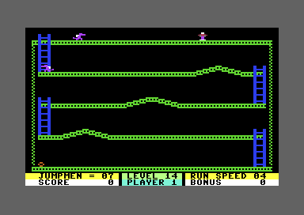
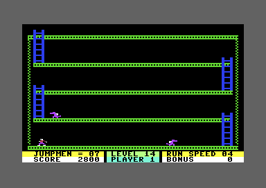
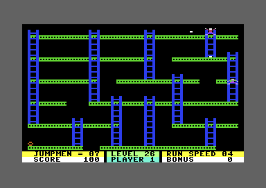
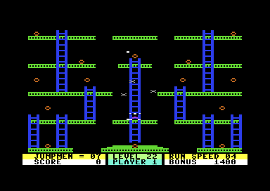
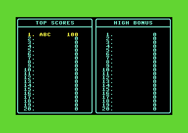
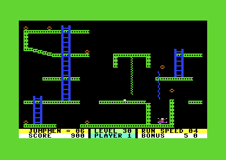

01 · Level changes
Bombs change the route
Collecting a bomb can remove a platform, add a ladder or redraw part of the level. Choose a bomb to compare the scenery before and after.
Pick a numbered bomb on the map or use the menu. Each comparison applies one bomb's drawing change to the stored opening layout. Moving actors, scoring and effects such as hiding the platforms are outside this view. The map also reveals Mystery Maze's hidden paths.
Source and checks
The viewer erases the selected bomb, then runs its linked drawing instructions. All 397 bomb records were checked against the original drawing code, comparing all 8,192 bitmap bytes in each of 1,191 checks. Forward and reverse drawing sequences also matched; those checks do not establish playable collection orders. The map starts before level-specific setup and omits later transformations.
Selected bomb record · Linked drawing instructions · Checks and scope
The thirty numbered levels use thirty-two files because Mystery Maze has three different layouts. Each file brings its own scenery and rules. The loader keeps a pristine copy at $3800 and restores it to $3000 for each player's turn. An ordinary bomb calls its private routine before awarding points and drawing its change. The renderer at $4D0F writes the pixels that the movement code later reads as terrain.
02 · Robot routes
How the robots choose a path
In Robots III, a robot tries one random direction whenever it reaches a junction. If the path exists and points toward Jumpman, it follows that path to the end. Otherwise it waits for another try.
Step 0
A slowed illustration of the route rules. Jumpman can be placed anywhere; collisions, death and his own movement rules are omitted. The example buttons place the actors for comparison. Changing a bomb effect restarts the robots with Jumpman where you placed him.
Source and checks
The page uses the original 30 route points, movement distances and random-number rule. Each step is one eligible robot update; Run shows six per second. All three robots share a repeatable random stream. Other parts of the game also use that stream, so a complete playthrough can produce different choices.
The exact page model matched 21,456 calls to the original robot routine, including 4,800 junction choices and every available path in all four opening states. The random-number rule matched all 65,536 possible states. Horizontal comparisons group adjacent pixels into pairs; equal horizontal positions permit left, and equal heights permit down.
Robot movement · Route points and distances · Left bomb effect · Right bomb effect · Checks and scope
Each of the two bomb effects opens a downward path. The upward path already exists. The same bomb also draws a ladder, which is shown in the map. The robots follow their stored routes even when those routes differ from the surfaces Jumpman uses.
03 · Dragon Slayer
Hits build the stairs
Every hit in Dragon Slayer earns 50 points. Every fourth hit also draws another section of stairs. The twelve sections take 48 hits to build.

Screens captured during one joystick replay. Jumpman stays alive throughout, and each change appears through the game's own drawing routine. The level was selected for this check, then played through joystick inputs.
Source and checks
The replay keeps Jumpman on the upper platform and fires short taps of left + fire as the creatures approach. The arrow rises briefly before falling, so the firing distance matters. The input sequence and its setup are saved with the evidence.
The game built all twelve stair sections and awarded 2,400 points for 48 hits. A 49th hit added another 50 points while leaving the stairs unchanged. All thirteen scenery states, including the starting layout, match the original hit and drawing routines in a separate code comparison. Continuing from that position, timed shots and vertical jumps let Jumpman cross the lower floors and collect the final bomb without losing a life. The completed route has 54 hits and 2,800 points. Entry through earlier campaign levels is outside this check.
Creature hits · Every-fourth-hit counter · Drawing the stairs · Checks and scope

The final bomb has been collected. The score has refreshed during the completion pause, before the level changes.
Gunfighter: hits change the pursuit boundaries
Gunfighter awards 100 points per hit and returns the enemy to a fixed respawn point. Each hit also moves the boundaries used to divide Jumpman's position into four regions. The enemies consult that region when choosing their routes.
A recorded shot hits an enemy on the upper platform, advances the boundary selection and leaves Jumpman alive. At that position, the old and new boundaries still put him in the same region. The replay confirms the hit and counter change; a resulting change in the enemy's route remains unverified.

Hit and reset · Pursuit boundaries · Checks and scope
04 · Invasion
Bug: a shot can hit the wrong alien
In Invasion, a shot can knock down an alien it never touches. If other aliens collide at the same time, the game can choose the wrong target.
Two separate contacts from the same moment of play. Original shapes and relative positions within each pair; colours distinguish the objects. The diagram reveals contacts hidden by the screen border.
The shot touches alien A. Farther right, aliens B and C touch one another. The game marks C as hit and awards 25 points.
The video chip reports which objects collided, but not which pairs touched. The game looks through the aliens in a fixed order. C comes first in this check, and the shared collision report also contains a shot, so C starts falling.
Source and checks
This happened using ordinary joystick controls after selecting and starting the level. The captured positions and sprite shapes show two separate contacts, with no shot touching C. Continuing the game changes C from flying to falling and adds 25 points while Jumpman stays alive. Replaying the same movement without firing earns no points.
The hit check · Checks and scope
05 · Three voices
Music: the stored tunes and effects
The sound driver schedules short byte streams on three voices. A higher-priority request can interrupt a lower one; equal priority leaves the existing sound running.
The sound player is available in the built site.
Original bytecode through a PAL SID model. The driver matched 23,764 original-code frame/state comparisons and 23,413 ordered register writes. SID reads use a last-write bus approximation without decay; writes within a frame are applied together. This is a synthesized interpretation, not a hardware recording. Some effects below 100 Hz are faint on small speakers.
Commands select envelopes, pulse width and stream jumps; ordinary notes store frequency and duration. Definitions at $603C supply three requests to $6000. Completion chooses among IDs 0–7, while 14 follows the score table and 15 accompanies the finished mission. The browser's Stop control silences playback; the game's zero-priority “silent” requests do not interrupt occupied voices.
06 · Creature contact
Freeze leaves the bullets moving
A freezing creature stops new movement and jump input. It can keep refreshing the timer while it touches Jumpman. Bullets continue to move, and a hit can still kill him.
Two 150-frame replays from the same creature contact: RIGHT+FIRE held, and no input. Position, life and timer match at every observation. The selected level was loaded normally before this contact; the player dies before the lock ends in both replays. These are recorded observations, not a playable simulation. Checks and scope.
The timer is set to 80 on contact. Its last decrement leaves the input override in place; the next countdown call clears it, and a following input poll reads the controls again. An existing jump or fall can continue during the lock. The countdown runs before the contact test, so another touch can immediately refill it.
The frozen player at recorded frame 80

There are 42 counts left here. Seven recorded frames later, a bullet starts the death animation. Controlled execution of the original movement code also confirms that an existing jump or unsupported fall advances under the input lock.
07 · Movement tables
The jump and its landing window
A jump follows 22 stored pairs of movements. Sideways jumps move four pixels on selected steps, with pauses between them. The first seven moves ignore landing contact.
● First 7 moves: contact ignored● Later moves: landing checked first
The 22 original pairs
| Move | Bytes (hex) | ΔX | ΔY | Landing checked before move |
|---|
Path through clear air, starting at X=160, Y=100. Coordinates use hardware pixels. Source: $4BFF, $4C2B, $4C57; movement and landing tests at $4B23. Horizontal bytes $02/$FE mean +4/−4 X; the vertical byte is a signed Y change.
Checked against the original routine in a 6502 simulator: 264 movement updates and 396 controlled contact tests. This inspector omits terrain sampling, walking, ropes, death animation and interrupt timing. Landing depends on contact already supplied to the movement routine; an eligible step alone does not land. After pair 22 the game returns to its grounded controller on the following update.
08 · Raster display
One frame, rebuilt from memory
The playfield is a multicolor bitmap. Near the bottom of the frame, an interrupt switches to a text screen for the status panel.
The reconstruction needs the built site's C64 renderer.
The captured writes switch video bank, bitmap mode and character pointers at their original raster positions. The split is driven by $4100 and restored through $42AD. Collision samples the bitmap at $47C0, so erasing a girder changes the surface Jumpman can stand on.
09 · Scores and lives
An extra life, one check at a time
The score is a 24-bit counter. Each check awards at most one extra life, then moves the next threshold forward by 10,000.
The bonus loses 100 every 256 enabled frame updates, about 5.107 seconds on this PAL setup. Completing a level adds the remaining bonus to both the score and the cumulative-bonus record. Speed keys change a requested divider; the next life applies it through $5799.
Entering and saving a high score
A normal joystick route collected a 100-point bomb, then exhausted the remaining lives. Vertical joystick movement selected ABC and fire accepted each letter. The game returned to its menu; a hard reset and fresh startup restored all 1,024 saved score bytes exactly.

Holding fire can accept a blank next letter as soon as the confirmation sound ends. Each accepted letter also resets the alphabet selector. When only the total score qualifies, the editor still writes to the failed bonus-table destination, but the checked writes stay beneath ROM, miss the interrupt vectors and leave bitmap residue that the next clear removes.
The final life award has a different width
The four finite modes award 100, 250, 500 or 750 per remaining life. Their accumulator retains only 16 bits. In a controlled live test, 88 × 750 displayed 66,000 on the last addition but added 464 to the totals. A legal route to 88 lives has not been established. The carry is lost between $297F and $2A1C.
10 · Filename selection
Randomizer and the missing level 25
Randomizer starts at level 12. For each continuation it chooses two decimal digits and retries only when both are zero.
Units lookup: 0123456789024681. Tens lookup: 01201212. The grid marks possible suffixes, not equal probabilities. The generator and chooser each matched all 65,536 possible inputs. Four inputs—0000, 4000, 8000 and C000—get stuck retrying 00; this viewer explains the stall instead. Those four are outside the uninterrupted sequence checked from the loaded seed. The 01 and 25 examples were also checked live.
The manual says Randomizer excludes the first level. This disk's selector at $5B8F can choose 01. It can also choose 25, but the disk stores Mystery Maze as 2A, 2B and 2C. Its filename table at $763A has no 25 entry. When a controlled request supplies 25, the title lookup loops before the disk loader can run. Its eight-bit index repeatedly scans the same 128 pairs without finding a match; native interrupts continue while the display stays blank. A natural play sequence reaching that selection boundary remains unverified.
11 · Evidence limits
Quirks and remaining questions
Grand Puzzle III: death can complete the level
With fewer than five bombs left, touching the moving trigger changes the level. After that change, a death leads to completion even when bombs remain. The first stage still respawns Jumpman after a death while lives remain.
A recorded route reaches the trigger through ordinary controls after collecting nine bombs and losing one life. The new layout keeps the three remaining targets. Moving left collects a 500-point bomb, then a death completes the level with two targets still left.

Selected-level replay; the route through earlier campaign levels is not established. Transformation · The death exit · Checks and scope
Hot Foot's holes and Runaway's late collection
Starting a jump in Hot Foot cuts a small hole in the scenery. Its drawing shape contains only background pixels: in one native jump, it erased sixteen occupied pixels, including part of a ladder. In a separate straight-up jump, the hole makes Jumpman land two pixels lower; he survives. That comparison restores only the erased scenery before replaying the landing. Checks and scope. The jump effect.
In Runaway, a flying bomb can still award 100 points while Jumpman is dying. The collection routine accepts the death animation state. A native replay with no joystick input after the selected level's setup reached this case: the bomb count fell from twelve to eleven while the score rose from zero to 100. This is an observed quirk; there is no evidence that it was intended as a secret. The collection routine · Checks and scope.
Followers remember where you were
Each collected bomb can add a follower that repeats earlier positions from Jumpman’s path. An ordinary-input replay creates two followers before death removes them. The game clears their active count and recording cursor, while keeping the stored path. A full seven-follower route remains unchecked.
Captured follower · Creation and history · Checks and scope
Unmatched bombs and retained code
Hailstones has four intended bomb records with no FF sentinel before executable code. The collector searches for a sentinel rather than stopping at the target count. The original sampler was tested at every normal nine-bit X and eight-bit Y, with both body masks. All 1,600 collectible contacts had valid keys. Erasing bombs only removes those pixels. The missing sentinel therefore does not establish a failure during ordinary collection; unusual coordinates and interrupt interleavings remain separate questions. The PLF13 records and following code remain visible together.
Some level files retain earlier levels' code and sprite tails. Those bytes are annotated by origin; their presence does not mean the level executes them. The source selector preserves each loaded image separately.
What the interactive models cover
The maps compare bomb-driven drawing changes; the robot explorer follows the stored routes and pursuit rules; the jump inspector executes displacement and contact rules; the sound player executes stored audio streams. The stair and freeze scrubbers show observations from ordinary input replays. These widgets do not make a full playable port. Fourteen level programs have expanded original-code checks, with positive ordinary-input captures in eight of them. Every level's initialized scene was captured, but the complete set of levels has not been finished through legal controls. The Source tab records the remaining behavior questions beside the verified facts.